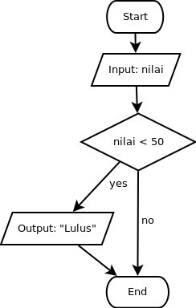

Untuk dilakukan:
Susunlah blok program sehingga sesuai dengan flowchart di bawah ini, kemudian tekan tombol evaluate:

Tidak ada yang istimewa pada bahasan kali ini. Program hanya akan meminta inputan nilai dari pengguna, lalu memunculkan tulisan "Lulus" hanya jika inputan nilai user tadi lebih besar dari 50.